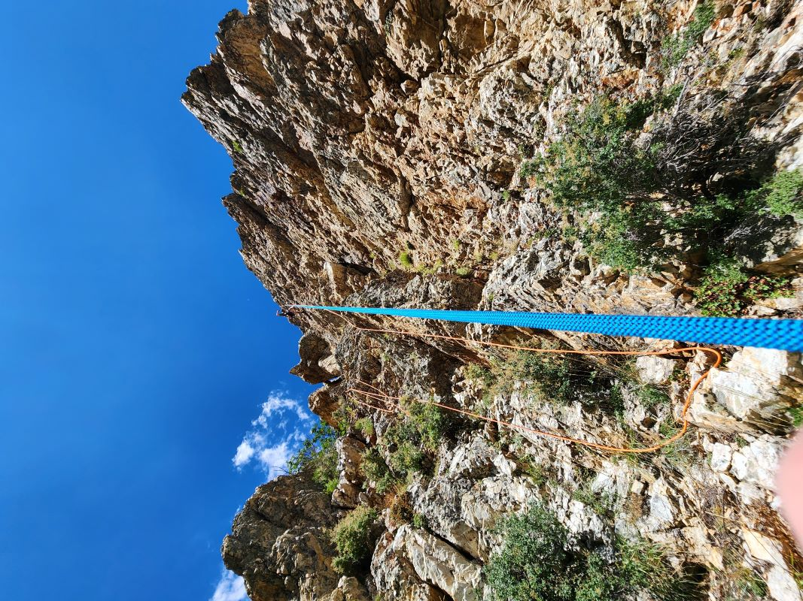

This page is more a log of one of my favorite experiences climbing - drilling our own route. This is not something I recommend doing unless you are very comfortable with your gear, have all the correct gear, and have done extensive research on how not to die. There's very little room for error here, and any mistake can cost your life, or another climbers life. Even if a bolt holds for you, if it's installed incorrectly, it might not hold for the next group of climbers. I will go over some of the things that happened for me and brother as we installed our own bolts.
One of the most, if not the most important thing that needs to be protected is your rope. If your rope breaks there's nothing you can do. As you can see in the picture, my brother and I are using 2 ropes, just to make sure if one breaks we'll be fine. Normally, a rope breaking is not really a possibility, if you are keeping up with your rope checking, but where this wall has never been climbed before, rocks could fall and cut the rope we are using. To continue, we decided to drill the wall with a top down approach, meaning that we hiked up to the top of the mountain, and secured the rope with slings and trad gear, then drilled our first bolts at the very top. This way we could secure ourselves to the top with a top rope anchor, and just lower down on the path we wanted to take, drilling as we go. This also reduces the chances of rocks falling on us, as both of us are above the drilling area.
This climb was very unique, and we ended up rating it a 5.9. The beginning is very easy, but it gets very pumpy and full of crimps near the top, leading to the rating that it got. It is one of the tallest single pitch routes in the area, and the rock is very rough leading to many paths you can take up. All in all it is an awesome route, and I am glad that I had a part in making it possible to climb.